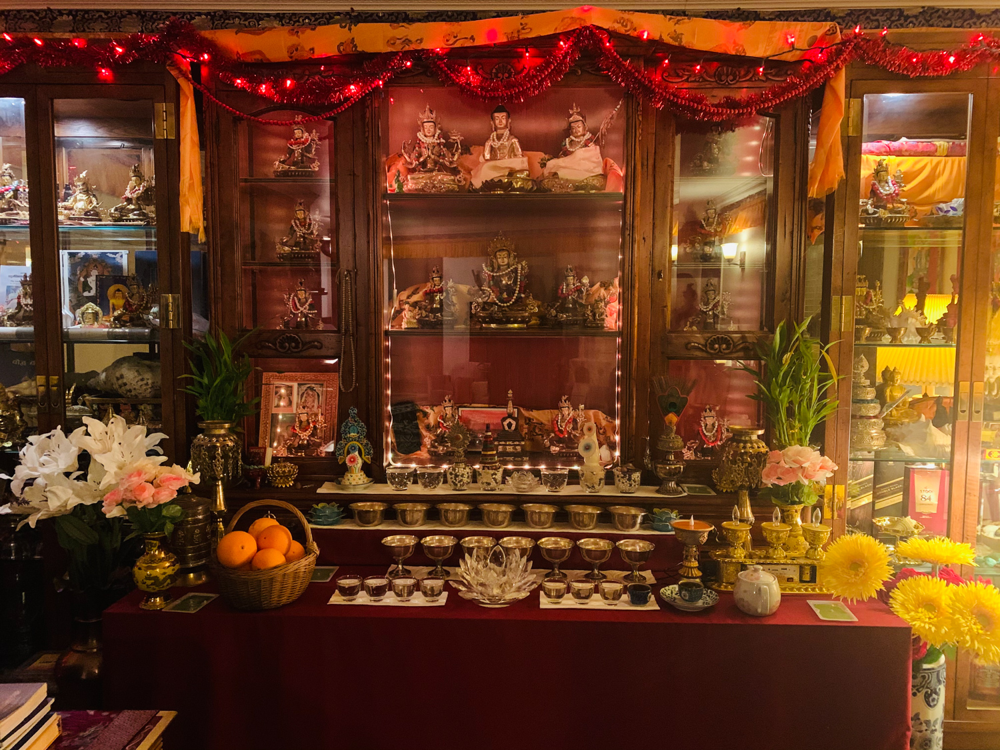
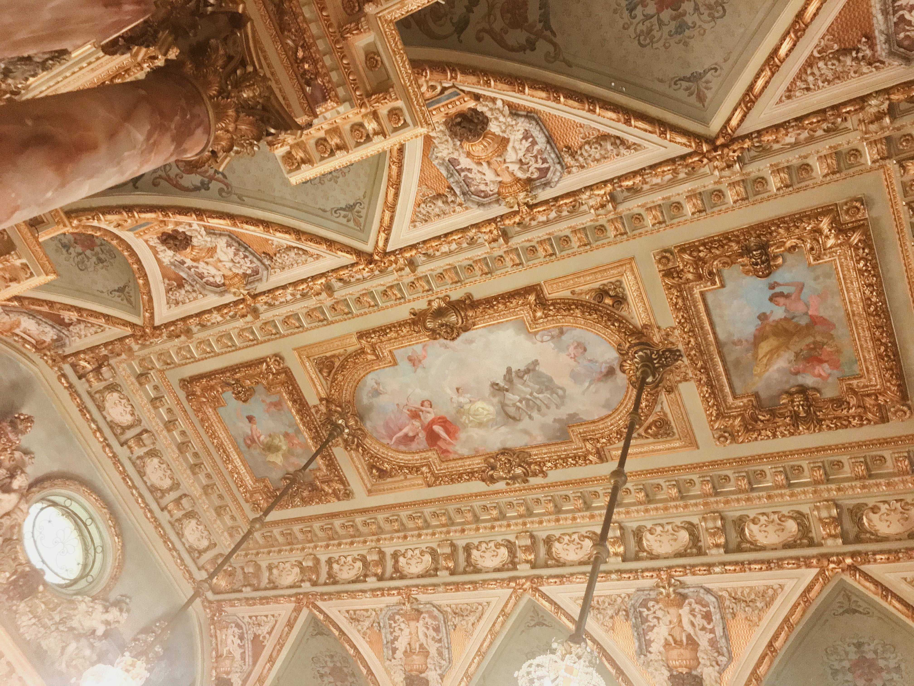

Journal Response 4
Febuary 10th, 2021
Visual Thinking Analysis

Buddhism - Erika Lama, 2021.
This image is interesting because it has a connection to my family and our belief in Buddhism. Through this image, you can see the collection of Buddhist gods and goddesses my family has gathered over twenty-five years. There are a total of twenty-seven gold-plated statues, each statue represents a different narrative. Moreover, towards the bottom of the image(on the table), you can see four layers of bowls filled with water, and some fruits on the basket, which is an offering to the god.
This image relates to the topic of an archive as well as a collection because some of the statues are passed down from my great grandparents. The passing from past generations to future generations, I think it makes it an archive piece.
I think the collection shows that I am a spiritual person. For me, I feel like following any religion, whether that be Buddhism, Islam, Hinduism, or Christianity, all teach us to pass on the positivity to the world. As I have a deep admiration toward the art world, these collections are also like an art collection for me, because every statue is handmade (from Nepal), and the details on the statue look surreal.
.

Breakers - Emily Lam, 2021.
The image is about a mural done seemingly in the early 1500s during the high renaissance period. I think the most interesting aspect of this image is the richness and vivid details that draw all the attention. It almost looks machine-made rather than hand made because of the rich details. One obvious aspect of the image tells me that Emily may have visited this place and she loves to take photographs of archive sites. And the mysterious aspect is that why did Emily choose this picture and what story resonates with her.